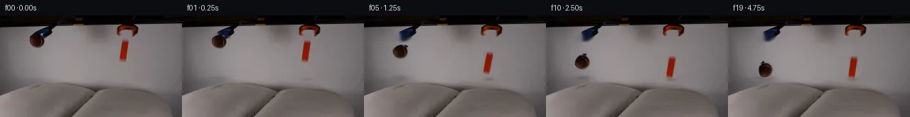

![首帧]()

Round 00
2026-11-04T19:04:58.938167+00:00像素候选变化代码 +223/−0inspection 更新
pixels 39fc522efd6f6c59 · code 23e41fd27b04085b
查看本轮 generate.py 真实 diff
--- previous/generate.py +++ current/generate.py @@ -0,0 +1,223 @@ +#!/usr/bin/env python3 +"""Generate the 20-frame PixelWorld continuation from the supplied first frame. + +The animation is constructed entirely with local numeric RGB operations. It +uses source-pixel cutouts, OpenCV inpainting, affine transforms, analytic +gravity/bounce trajectories, soft projected shadows, and a small displacement +warp for pillow compression. +""" + +from pathlib import Path + +import cv2 +import numpy as np +from PIL import Image, ImageDraw, ImageFont + +import artifact_io + + +ROOT = Path(__file__).resolve().parent +W, H = 256, 144 + + +def ellipse_alpha(shape, cx, cy, rx, ry, feather=1.2): + """Return an antialiased analytic ellipse mask in [0, 1].""" + h, w = shape + yy, xx = np.mgrid[:h, :w] + # Approximate signed distance in output pixels. + q = np.sqrt(((xx - cx) / rx) ** 2 + ((yy - cy) / ry) ** 2) + px = (1.0 - q) * min(rx, ry) + return np.clip(px / feather + 0.5, 0.0, 1.0).astype(np.float32) + + +def rounded_box_alpha(shape, x0, y0, x1, y1, radius=2.5, feather=1.0): + """Return a soft rounded-rectangle mask using a signed-distance field.""" + h, w = shape + yy, xx = np.mgrid[:h, :w] + cx, cy = (x0 + x1) / 2.0, (y0 + y1) / 2.0 + bx, by = (x1 - x0) / 2.0 - radius, (y1 - y0) / 2.0 - radius + qx, qy = np.abs(xx - cx) - bx, np.abs(yy - cy) - by + outside = np.hypot(np.maximum(qx, 0), np.maximum(qy, 0)) + inside = np.minimum(np.maximum(qx, qy), 0) + signed = outside + inside - radius + return np.clip(0.5 - signed / feather, 0.0, 1.0).astype(np.float32) + + +def clean_plate(source, masks): + """Numerically remove held objects while retaining the fixed set/tools.""" + mask = np.maximum.reduce(masks) + hard = (mask > 0.04).astype(np.uint8) * 255 + hard = cv2.dilate(hard, np.ones((5, 5), np.uint8), iterations=1) + # TELEA extrapolates the low-frequency photographic pillow texture. + return cv2.inpaint(source, hard, 4.0, cv2.INPAINT_TELEA) + + +def warp_pillows(image, contacts): + """Apply local downward texture displacement at active impact sites.""" + yy, xx = np.mgrid[:H, :W].astype(np.float32) + displacement = np.zeros((H, W), np.float32) + for cx, surface_y, strength, width in contacts: + if strength <= 0: + continue + bell = np.exp(-(((xx - cx) / width) ** 2 + ((yy - surface_y) / 12.0) ** 2)) + lower_only = np.clip((yy - 62.0) / 12.0, 0.0, 1.0) + displacement += strength * bell * lower_only + map_x = xx + map_y = np.clip(yy - displacement, 0, H - 1) + return cv2.remap(image, map_x, map_y, cv2.INTER_LINEAR, borderMode=cv2.BORDER_REFLECT_101) + + +def add_shadow(image, cx, cy, rx, ry, opacity): + """Multiply in a soft, neutral contact/projected shadow.""" + yy, xx = np.mgrid[:H, :W] + d = ((xx - cx) / rx) ** 2 + ((yy - cy) / ry) ** 2 + matte = np.exp(-1.8 * d).astype(np.float32) + matte = cv2.GaussianBlur(matte, (0, 0), 1.25) + factor = 1.0 - opacity * matte[..., None] + return np.clip(image.astype(np.float32) * factor, 0, 255).astype(np.uint8) + + +def composite_affine(base, source, alpha, source_center, dest_center, + angle_deg=0.0, sx=1.0, sy=1.0): + """Affine-transform a premultiplied source layer and alpha-composite it.""" + theta = np.deg2rad(angle_deg) + c, s = np.cos(theta), np.sin(theta) + linear = np.array([[c * sx, -s * sy], [s * sx, c * sy]], np.float32) + sc = np.asarray(source_center, np.float32) + dc = np.asarray(dest_center, np.float32) … diff truncated; 136 more lines …